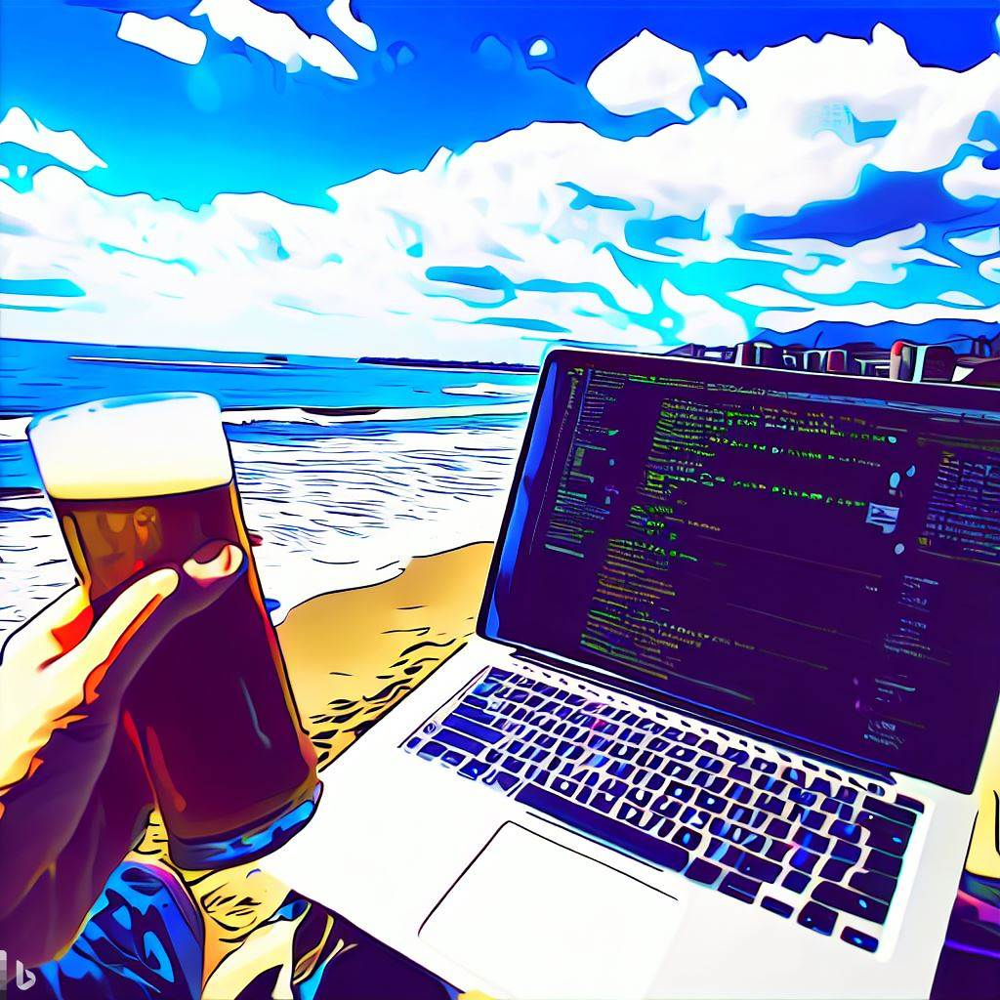

Earthful Magic Builder Hackathon
Agentic Coding on the Coast
海辺のエージェンティック・コーディング
📍 Shonan, Kanagawa · Sunday 29 November 2026
📍 神奈川県湘南エリア · 2026年11月29日（日）
A one-day, in-person product sprint where ~40 engineers, designers, and builders use AI coding agents to build working prototypes for a real climate startup.
The 2026 edition of ShoCode is the Earthful Magic Builder Hackathon, hosted by Earthful Magic and Cor-an Holdings and co-hosted by ShoCode with AI Tinkerers Japan. Earthful Magic helps small, often invisible farmers in Africa and Southeast Asia become export-ready by growing Moringa, a superfood tree, funded in part by carbon credits under the Verra VM0047 methodology. Farmers earn a salary, and the world gets a high-quality superfood.
Getting from bare land to a registered carbon project is unclear, expensive, and slow, and much of the pain is wading through stacks of PDFs to check whether land qualifies. Your prototypes may feed directly into Earthful Magic's product development, and high-potential teams can get follow-on support.
エンジニア、デザイナー、ビルダー約40名が AI コーディングエージェントを使い、実在する気候テックスタートアップのために動くプロトタイプを作る、1日集中・対面形式のプロダクトスプリントです。
2026年の ShoCode は Earthful Magic ビルダーハッカソンとして開催します。主催は Earthful Magic と Cor-an Holdings、共催は ShoCode と AI Tinkerers Japan です。Earthful Magic は、アフリカや東南アジアの小規模で「見えない」農家が、スーパーフードの樹木モリンガを育てて輸出できるよう支援しています。その資金の一部は Verra の VM0047 方法論に基づくカーボンクレジットでまかないます。農家は給与を得て、世界は高品質なスーパーフードを得られます。
何もない土地から登録済みのカーボンプロジェクトに至る道のりは、不透明で、高コストで、時間がかかります。特に、土地が適格かどうかを大量の PDF で確認する作業が大きな負担です。作ったプロトタイプは Earthful Magic のプロダクト開発に直接活かされる可能性があり、有望なチームには継続的な支援の機会があります。
Teams of 1 to 3 pick a stream during team setup on the morning of the event.
1〜3名のチームが、当日朝のチーム編成の時間にストリームを選びます。
Build a software prototype that assesses land eligibility and Moringa suitability under the VM0047 methodology. Earthful Magic has defined the product; you build it.
Map the project developer and farmer customer journey, uncover an unaddressed pain point through desk research, and build the solution. Pitch who it is for, their goal, the pain, your solution, and how it differs from what exists.
VM0047 方法論における土地の適格性とモリンガ栽培適性を評価するソフトウェアのプロトタイプを作ります。作るべきプロダクトは Earthful Magic が定義済みです。
プロジェクト開発者と農家のカスタマージャーニーをマッピングし、デスクリサーチで未解決の課題を見つけて解決策を作ります。誰のためか、その人の目標、課題、解決策、既存のものとの違いを発表します。
Draft schedule. Times may shift once the venue is confirmed.
スケジュール案です。会場確定後に変更になる場合があります。
Check-in, a plain-language briefing on the mission, VM0047, and farmer impact, then team setup and stream selection.
Heads-down building with AI coding agents. Grab-and-build lunch at noon.
Working demos for industry judges, clean-up, awards at 17:00, then dinner with builders, judges, and partners from 18:00.
受付の後、ミッション、VM0047、農家へのインパクトをわかりやすく説明します。その後チーム編成とストリーム選択。
AI コーディングエージェントと集中してビルド。お昼は作りながら食べられるランチです。
業界の審査員に動くデモを披露。片付けの後 17:00 に表彰、18:00 からビルダー、審査員、パートナーとのディナー。
Judged by carbon project developers, forest developers, agricultural supply chain operators, and climate-tech investors. One winner per stream, plus partner prizes. See the hackathon rules.
カーボンプロジェクト開発者、森林開発者、農業サプライチェーンの事業者、気候テック投資家が審査します。各ストリームから1チームが受賞し、パートナー賞もあります。詳しくはハッカソンルールをご覧ください。
This event is for people who make things. If you ship code, design systems, or prototype ideas — you belong here.
Demos over slides. Show something that runs, built for a real problem.
We partner with organizations that share the mission, but ShoCode belongs to the community.
Materials in both Japanese and English. Participate in whichever language you're most comfortable with.
このイベントは、ものを作る人のためのイベント。コードを書く人、システムを設計する人、アイデアをプロトタイプする人 — あなたの場所です。
スライドよりデモ。実際の課題のために作った、動くものを見せてください。
ミッションを共有するパートナーと共に運営しますが、ShoCode はコミュニティのものです。
資料は日本語と英語の両方で。あなたが最も快適な言語でご参加ください。
What sets ShoCode apart is its setting. The Shonan area stretches along the coast of Kanagawa Prefecture, with views of Mount Fuji across Sagami Bay, ocean breezes, and the relaxed energy that only a coastal town can offer.
This isn't another conference in a windowless hotel ballroom. The Shonan coast provides a backdrop that sparks creativity — beaches, trails, surf culture, local cafés, and the unmistakable feeling that you've stepped outside the ordinary. Come for the code, stay for the sea.
ShoCodeを特別なものにしているのは、その立地です。湘南エリアは神奈川県の海岸線に広がり、相模湾越しに望む富士山、心地よい潮風、そして海辺の街ならではのリラックスした空気感があります。
窓のないホテルの宴会場で行われるカンファレンスとは違います。湘南の海岸は、クリエイティビティを刺激するステージ。ビーチ、トレイル、サーフカルチャー、地元のカフェ、そして日常から一歩踏み出した特別な感覚。コードのために来て、海のために留まってください。
Registration is on Luma. Lunch and dinner are included. Space is limited to about 40 builders, so registrations are reviewed. Accepted participants receive a packet with an introduction to Earthful Magic, the challenge briefing, and what to bring.
参加登録は Luma で受け付けます。ランチとディナー付きです。定員は約40名のため、登録内容を確認のうえ参加を確定します。参加が確定した方には、Earthful Magic の紹介、チャレンジのブリーフィング、持ち物をまとめた参加者パケットをお送りします。
Register on Luma Luma で登録する